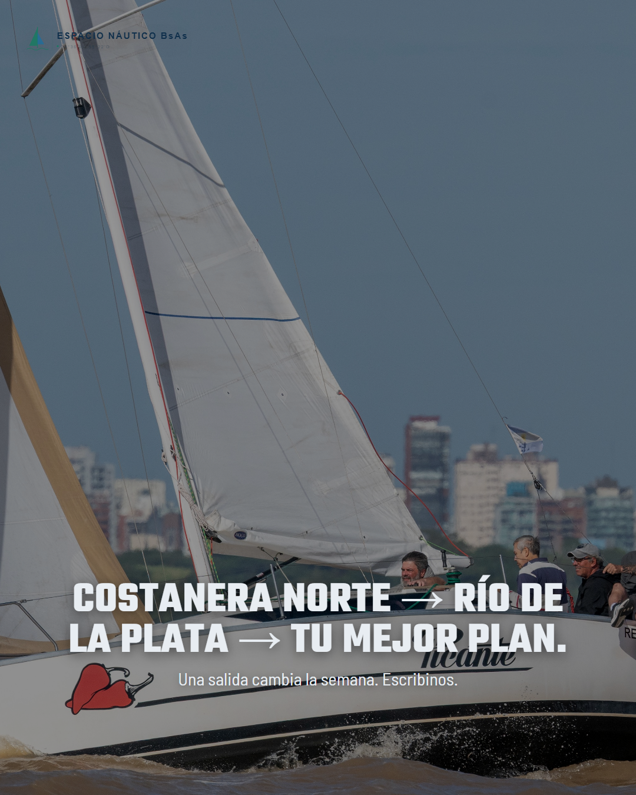
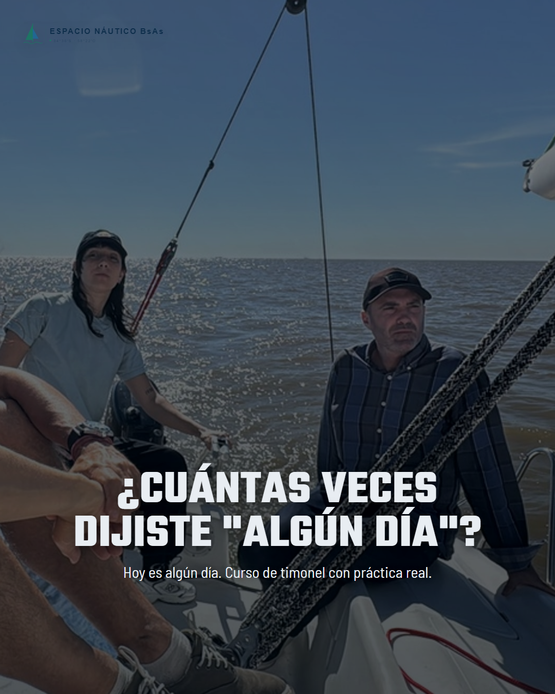
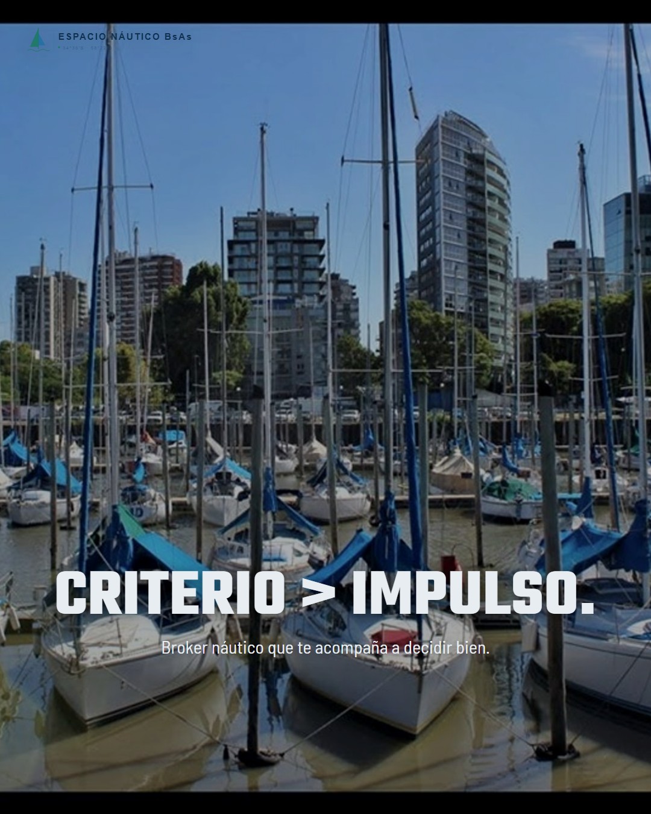

Instagram
Costanera Norte → Río de la Plata → Tu mejor plan.
Así de simple. Así de cerca. Una salida en velero que cambia la semana en 3 horas.
👉 Escribinos por DM con cuántos son y te armamos la salida.
#EspacioNautico #ENBA #NavegaElRioDeLaPlata #VelerosBuenosAires #RioDeLaPlata #PlanDeFinde #PlanesBuenosAires #QuéHacerEnBuenosAires #SalidaDistinta #ExperienciasBuenosAires
Por qué convierte: Las flechas → crean un journey visual que el cerebro completa antes de leer el caption. El CTA pide dato concreto ("cuántos son") — eso baja la barrera de "qué le digo" y sube el ratio de DM. Probado en turismo experiencial: el CTA con pregunta específica convierte 3x más que "escribinos".

Instagram
¿Cuántas veces dijiste "algún día"?
Hoy es algún día. Curso de timonel con práctica real en el Río de la Plata. Sin experiencia previa, sin requisitos, sin excusas.
👉 Escribinos "timonel" por DM y te mandamos toda la info.
#EspacioNautico #ENBA #EscuelaNautica #VelerosBuenosAires #RioDeLaPlata #NavegacionReal #SailingArgentina #PlanesBuenosAires #SalidaDistinta #QuéHacerEnBuenosAires
Por qué convierte: "Algún día" es la objeción universal. La pieza la nombra, la valida y la cierra en un solo scroll. El CTA con keyword ("escribinos 'timonel'") automatiza la respuesta via ManyChat y trackea conversión exacta. La foto con dos personas en cubierta muestra que no estás solo.

Instagram
Criterio > Impulso.
Elegir un velero es una decisión importante. Nosotros estamos para que la tomes bien: con información, comparación y acompañamiento real.
👉 Si estás evaluando opciones, escribinos "broker" por DM.
#EspacioNautico #ENBA #BrokerNautico #VelerosBuenosAires #RioDeLaPlata #NavegacionReal #SailingArgentina #PlanesBuenosAires #ExperienciasBuenosAires #SalidaDistinta
Por qué convierte: "Criterio > Impulso" es una frase que funciona como filtro de audiencia — atrae al comprador serio y repele al curioso. La marina llena de veleros contextualiza oferta sin mostrar uno solo como "el elegido". CTA con keyword "broker" segmenta el lead desde el primer contacto.